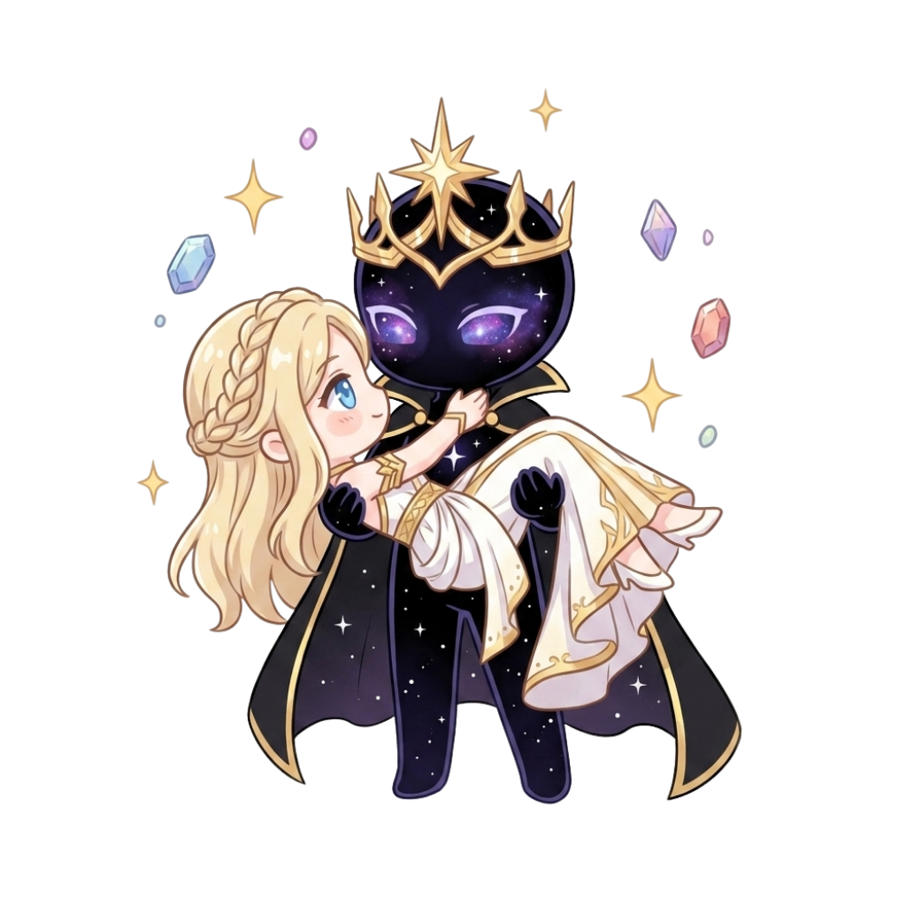
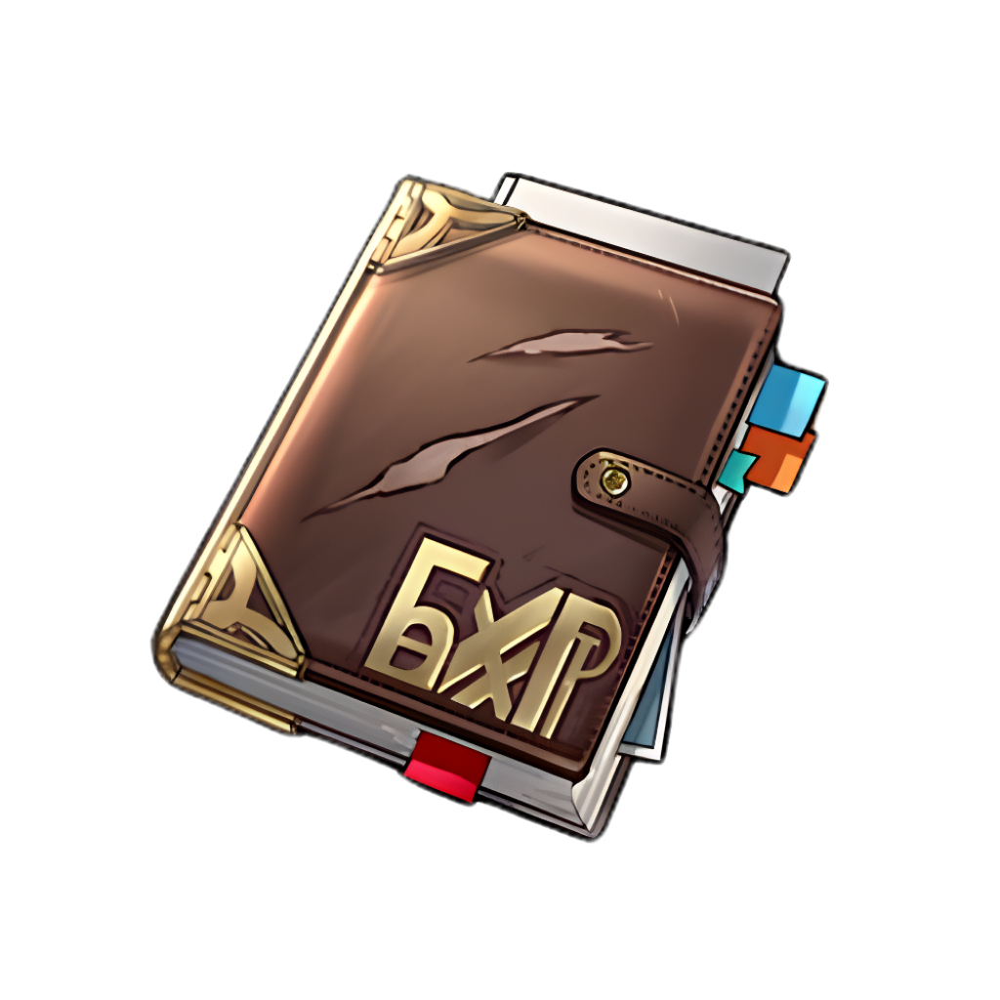

Where the Courageous Hearts become Adventurers.
Once, there was a God who governed the world. Until there was not.
When humanity was abandoned, they did not endure. They turned against one another, and the world fell into chaos.
Displeased by what they had become, the God made one final decree: six leaders were chosen to rule in his stead, each bestowed with a fragment of his divine will.
With his final blessing given, the God descended into a deep slumber… never to awaken again.
Now, history is written by the hands of those willing to bleed for it.
Established territories led by the divine rulers.
Ungoverned wilds, cursed zones, and places only the strongest can reach.

